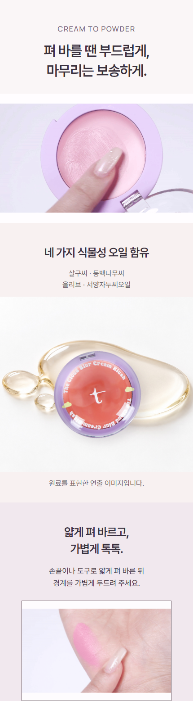
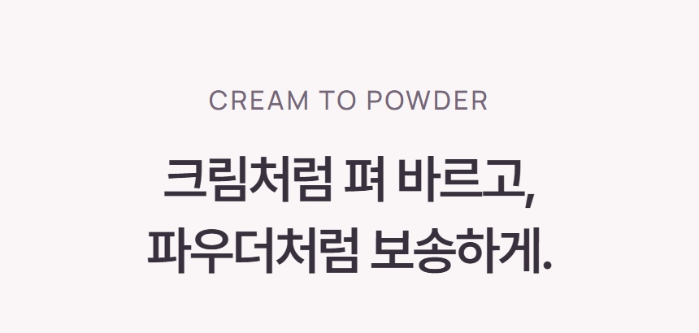
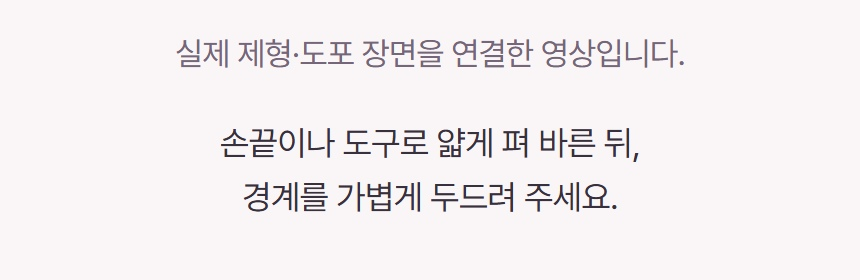
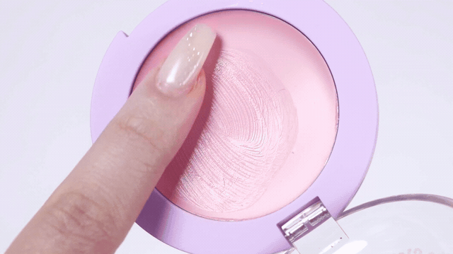
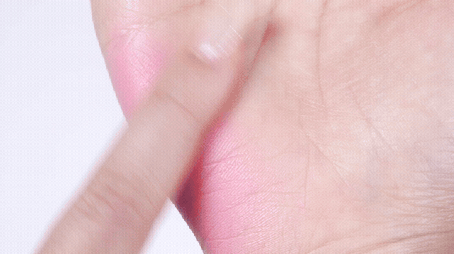
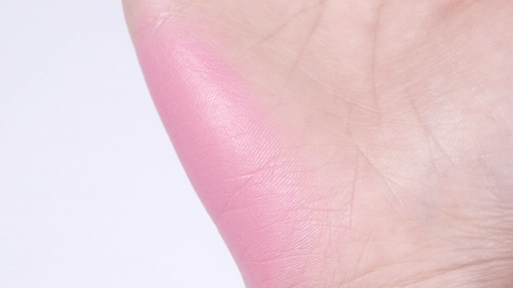

제형과 사용법을 한 구간으로
크림 터치 → 얇게 펴 바르기 → 손가락이 빠진 도포 표면을 하나의 GIF로 연결했습니다. 바로 아래에 사용법을 붙이고, 큰 오일 이미지와 제품 합성을 제거했습니다.
현재 Cafe24 구성 전체 보기
오른쪽은 실제 납품 JPG·GIF 구성입니다. 5.51초 GIF는 3회 재생 후 도포 표면에서 멈춥니다. 서로 다른 두 촬영 샷을 연결한 사용 안내이며, 제형 전환을 입증하는 동일 부위 전후 시험은 아닙니다. 실제 Cafe24 업로드는 보류 상태입니다.
이전 · 제형 → 오일 연출 → 별도 사용법
수정 · 제형과 사용법 연결, 성분 정보 축소


새 GIF의 실제 장면

크림 터치
얇게 펴 바르기
손가락이 빠진 도포 표면기존 영상의 밝기 처리 방식(r2)을 유지해 후반 원본까지 확장했습니다. 새로운 색감 연출이나 피부 보정은 추가하지 않았습니다.